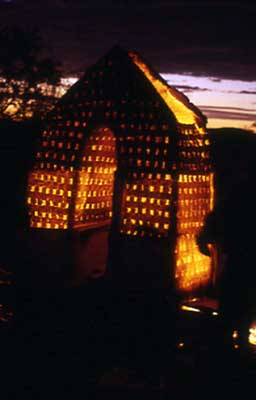
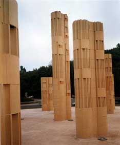
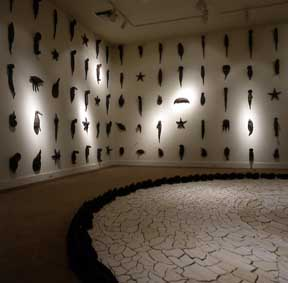
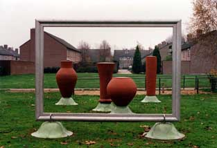

| Book Review | ||
| Ceramics and the
Environment
Janet Mansfield's new book Ceramics and the Environment is a tour of contemporary, mostly large-scale sculpture, often public, sometimes private, commissioned by government bodies, architects and more rarely, the private collector. It spans numerous countries, from Australia to Iceland, from China to Finland. As can be seen above, Mansfield has divided her survey into bite-sized chapters such as "Introducing Sculpture in a Specific Environment", "In Harmony with Space" or "Monumental Concepts". Each of these chapters approaches the topic from a slightly different perspective, each with its own introduction, followed by a few artists illustrating the point to be made. In her introduction to Chapter 1, Mansfield writes of the need to bring public ceramic sculpture to the attention of a wider audience. Yes, there is a need to draw attention to ceramic artists and ceramic sculpture in the environment. Often ceramic sculpture is not recognized as such - the work or concept becoming the central focal point, the material secondary. But just as often, the maker sees him or herself as a ceramic artist, i.e. one who primarily uses ceramic materials and techniques. This is one of the prevailing oddities of the ceramic arts - the loyalty to the material. And yet, this loyalty is perhaps no more odd, than that of the painter, who swears by oil paint over acrylics. Of course there are also those ceramic artists, who have worked with or even wholly migrated to other media and those (fine) artists, who have dabbled with the ceramic medium, but they are not who this book is about. As Mansfield states in her introduction, the genesis of this book lay in the Australian ceramics event in 1995 "ClaySculpt Gulgong", where 22 international ceramists were invited to do their stuff with and in the environment of rural New South Wales, creating a sculpture park in the process. Many of those artists are represented in the book. Some in my view interesting, if not fascinating works and concepts stand out, e.g."'kiln as performance". Perhaps the best known representative of the genre is Danish ceramist Nina Hole, whose large-scale abstract or architectural sculptures are wrapped in ceramic fibre and spectacularly fired in-situ at night (left), transforming the event into part of the work, the sculpture into performance.
 A recurring element in large-scale ceramic sculpture is the multiple, often in the form of the tile, sometimes other more solid segments (such as in the work of Nino Caruso). This is often due to the limitations of kiln size. Once the work reaches dimensions that can no longer be accommodated by the kiln, the ceramic artist may work in segments, which are assembled post-firing, as in Nino Caruso's assembled monumental works referencing ancient architecture (left), Ulla Viotti's work in assembled bricks or Ole Lislerud's monumental porcelain tile claddings.

A chapter of particular interest to me is "Expressing Care for the Earth", in which Mansfield highlights a number of ceramists concerned with environmental issues or just imbued with and inspired by a general empathy with mother nature or the planet. Of these, Sadashi Inuzuka's installations concerning issues of global water shortages, or as he says in more general terms, "the relationship between human nature and nature itself", stand out (left). Amongst my favorite works in this book is Belgian ceramist Michel Kuipers' "Still Life" (left). Turning not only 17th century still lifes, or those of Morandi, but also those of Gywn Hanssen-Pigott on their heads, Kuipers work consists of four large-scale vessels situated in a residential environment. The 'vessels' are framed by an even larger empty frame - intelligently creating a potentially dynamic 'still life' (e.g. if someone were to walk into the 'picture', or a bird were to perch on one of the vessels). Ceramics and the Environment is a bit like Kuipers' still life - a snap shot or freeze-frame of contemporary public sculpture. |
||
| © Ceramics Today |